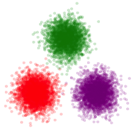

JuliaStats
Statistics and Machine Learning made easy in Julia.
- Easy to use tools for statistics and machine learning.
- Extensible and reusable models and algorithms
- Efficient and scalable implementation
- Community driven, and open source